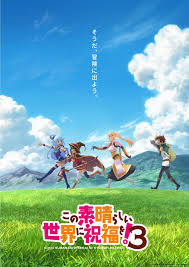
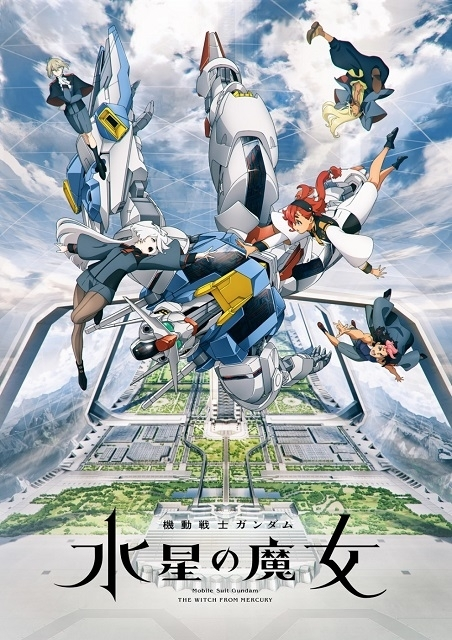

この素晴らしい世界に
祝福を！

このすば公式サイトへ
暁なつめによる異世界コメディー作品。不慮の事故で異世界へと転生した主人公『佐藤和真』は難ありなパーティメンバーとともにドタバタ異世界ライフを謳歌する！？シリーズ累計900万部を突破した原作は17巻で堂々完結！アニメは現在3期放送中！
Re.ゼロから始める
異世界生活

公式サイトへ
突如異世界へ召喚された主人公『菜月昴』。彼が唯一手にしたのは時間を巻き戻す『死に戻り』の力。大切な人たちを守るため絶望に抗い、残酷な運命に立ち向かっていく物語。長月達平によるライトノベルを原作とした作品。10月より3rd season放送スタート！
機動戦士ガンダム
水星の魔女

水星の魔女公式サイトへ
水星からアスティカシア高等専門学園に編入してきた『スレッタ・マーキュリー』は仲間たちとともに学園生活を送る。少女たちはそれぞれの想いを胸に、ガンダムがもたらす強大な呪いへと立ち向かっていく...!Season1、Season2の全24話の少女たちの物語。